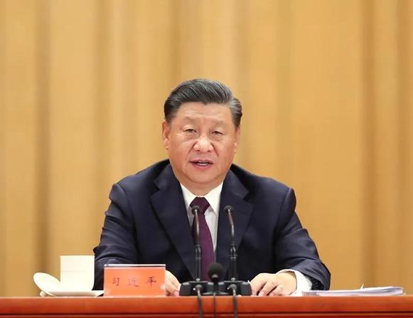
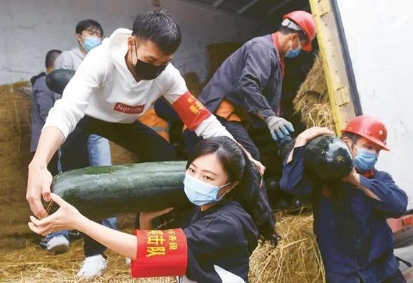
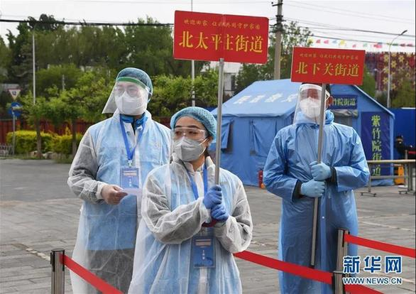

编者按：习近平总书记在全国抗击新冠肺炎疫情表彰大会上的讲话中强调，在这次抗疫斗争中，青年一代的突出表现令人欣慰、令人感动。青年一代不怕苦、不畏难、不惧牺牲，用臂膀扛起如山的责任，展现出青春激昂的风采，展现出中华民族的希望！让我们一起为他们点赞！新冠肺炎疫情发生以来，习近平总书记不止一次点赞奋战在疫情防控一线的青年一代，让我们一起来看↓↓↓
2020年9月8日，全国抗击新冠肺炎疫情表彰大会在北京人民大会堂隆重举行。中共中央总书记、国家主席、中央军委主席习近平在大会上发表重要讲话。 新华社记者 姚大伟/摄

在新冠肺炎疫情防控斗争中，你们青年人同在一线英勇奋战的广大疫情防控人员一道，不畏艰险、冲锋在前、舍生忘死，彰显了青春的蓬勃力量，交出了合格答卷。广大青年用行动证明，新时代的中国青年是好样的，是堪当大任的！我向你们、向奋斗在疫情防控各条战线上的广大青年，致以诚挚的问候！
青年一代有理想、有本领、有担当，国家就有前途，民族就有希望。希望你们努力在为人民服务中茁壮成长、在艰苦奋斗中砥砺意志品质、在实践中增长工作本领，继续在救死扶伤的岗位上拼搏奋战，带动广大青年不惧风雨、勇挑重担，让青春在党和人民最需要的地方绽放绚丽之花。
——习近平总书记2020年3月15日给北京大学援鄂医疗队全体“90后”党员的回信
在新冠肺炎疫情防控斗争中，广大青年在党的领导下，挺身而出、担当奉献，充分展现了新时代中国青年的精神风貌。图为2020年3月3日，在广西南宁国际铁路港，南宁车务段青年突击队队员和工作人员正在搬运支援湖北的物资。 新华社记者 陆波岸/摄

青春由磨砺而出彩，人生因奋斗而升华。面对突如其来的新冠肺炎疫情，全国各族青年积极响应党的号召，踊跃投身疫情防控人民战争、总体战、阻击战，不畏艰险、冲锋在前、真情奉献，展现了当代中国青年的担当精神，赢得了党和人民高度赞誉。我为你们感到骄傲！
今年是决胜全面小康、决战脱贫攻坚的收官之年，也是实现“两个一百年”奋斗目标的历史交汇之年。新时代中国青年要继承和发扬五四精神，坚定理想信念，站稳人民立场，练就过硬本领，投身强国伟业，始终保持艰苦奋斗的前进姿态，同亿万人民一道，在实现中华民族伟大复兴中国梦的新长征路上奋勇搏击。
各级党委和政府、各级领导干部以及全社会都要关心青年成长，支持广大青年建功立业。共青团要肩负起党赋予的光荣职责，团结带领广大团员青年为新时代党和国家事业发展作出新的更大的贡献。
——习近平总书记2020年五四青年节到来之际向全国各族青年致以节日的祝贺和诚挚的问候
在北京市海淀区北太平庄街道综合行政执法队有一支“青年防疫小分队”，这支队伍由综合行政执法队中的80、90后组成。从2020年2月上旬开始，小分队的队员们夜以继日地工作在战“疫”前线，守护所管片区居民安全，助力辖区企业复工复产。图为4月25日，“青年防疫小分队”队员在海淀区集中分流点等待所属街道的离鄂返京人员。 新华社记者 任超/摄

得知你们118名同学毕业后将奔赴新疆基层工作，立志同各族群众一起奋斗，努力成为可堪大用、能担重任的西部建设者，我支持你们作出的这个人生选择。
这场抗击新冠肺炎疫情的严峻斗争，让你们这届高校毕业生经受了磨练、收获了成长，也使你们切身体会到了“志不求易者成，事不避难者进”的道理。前进的道路从不会一帆风顺，实现中华民族伟大复兴的中国梦需要一代一代青年矢志奋斗。同学们生逢其时、肩负重任。希望全国广大高校毕业生志存高远、脚踏实地，不畏艰难险阻，勇担时代使命，把个人的理想追求融入党和国家事业之中，为党、为祖国、为人民多作贡献。
各级党委、政府和社会各界要切实做好高校毕业生就业工作，采取有效措施，克服新冠肺炎疫情带来的不利影响，千方百计帮助高校毕业生就业，热情支持高校毕业生在各自工作岗位上为党和人民建功立业。 ——习近平总书记2020年7月7日给中国石油大学（北京）克拉玛依校区毕业生的回信
青年是国家和民族的希望。在这次抗疫斗争中，青年一代的突出表现令人欣慰、令人感动。参加抗疫的医务人员中有近一半是“90后”、“00后”，他们有一句话感动了中国：2003年非典的时候你们保护了我们，今天轮到我们来保护你们了。长辈们说：“哪里有什么白衣天使，不过是一群孩子换了一身衣服。”世上没有从天而降的英雄，只有挺身而出的凡人。青年一代不怕苦、不畏难、不惧牺牲，用臂膀扛起如山的责任，展现出青春激昂的风采，展现出中华民族的希望！让我们一起为他们点赞！ ——习近平总书记2020年9月8日在全国抗击新冠肺炎疫情表彰大会上的讲话
来自: 求是网；作者： 杨绍华 盛玮 张利英 王慧 编制